Buy Low, Sell High: Using Puck Luck to Outsmart the NHL Market
By Nick Iacoban | June 11, 2026

Macklin Celebrini, San Jose Sharks
In the NHL, "Puck Luck" is more than just a locker-room cliché; it is a measurable driver of outcomes. Hockey is a low-scoring game where results are often subject to extreme randomness and variance. While teams often point to a bad bounce after a single loss, this same logic applies to entire seasons. One of the most dangerous traps for a front office is believing a player’s sudden production spike represents permanent improvement when, in reality, they are simply benefiting from a temporary surge in shooting luck. This often regresses toward the mean the following season, frequently right after the player has signed a lucrative contract that they may never live up to. Understanding long-term variance in the NHL is crucial to good decision-making and team building, something that many teams don’t accurately account for.
On-Ice Shooting (OiSH%) Percentage is often used as a way to separate sustainable talent from statistical noise baked into a player’s point production, such as goals and assists. This metric measures the team’s shooting efficiency while a specific player is on the ice. For example, if a player is on the ice for 10 shots against the opposing team that result in 3 goals, they have a 30% on-ice shooting percentage. In large sample sizes, this stat typically regresses towards the league average percentage, which is 10.3% this season.
Each goal in hockey has a goal scorer who earns one point, and up to two players who receive a point as well for the primary and secondary assists. If a player is on the ice for more goals that they are likely to be involved in, they are likely to gain more points. If a player is on the ice for an unsustainable amount of goals, then their production will eventually change as their shooting percentage comes back to league average.
The following chart shows the relationship between a player’s on-ice shooting percentage and their points pace per 60 minutes of ice time. A correlation of 0.458 is very significant in sports where high correlations are hard to find due to the many factors that affect production. This shows us that 46% of the variance between the player's scoring rate can be explained by the team's shooting efficiency. While other factors like teammate and opponent quality, player deployment, and powerplay time play a role, puck luck is the primary driver of boxscore production.
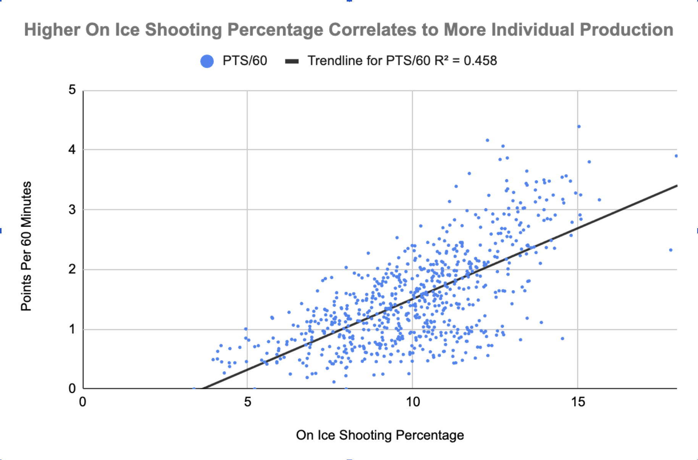
Macklin Celebrini is an example of this. The chart below shows a rolling average of his game score, a metric used to evaluate how good a game a player played.
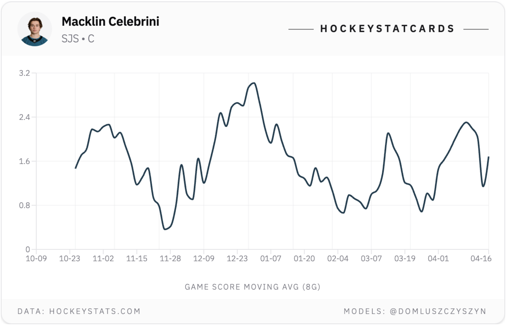
Celebrini clearly peaked this season from mid-December to mid-January. This period resulted in many slotting Celebrini in their MVP talks because of how he was carrying a mediocre Sharks team to a playoff spot. During this stretch, Celebrini’s on-ice shooting percentage was 18%, compared to his rate of 14.53% over the entire season. Variance will happen in the NHL, but acknowledging it and accounting for it in discussions about a player is important to making smart team-building decisions.
Finding players with good or bad puck luck isn’t as easy as simply seeing who is above or below league average. If player skill is irrelevant in who has a high percentage, then the leaderboard this season should be a collection of random players. Here’s the top fifteen from the 2025-2026 season per hockeystats.com.
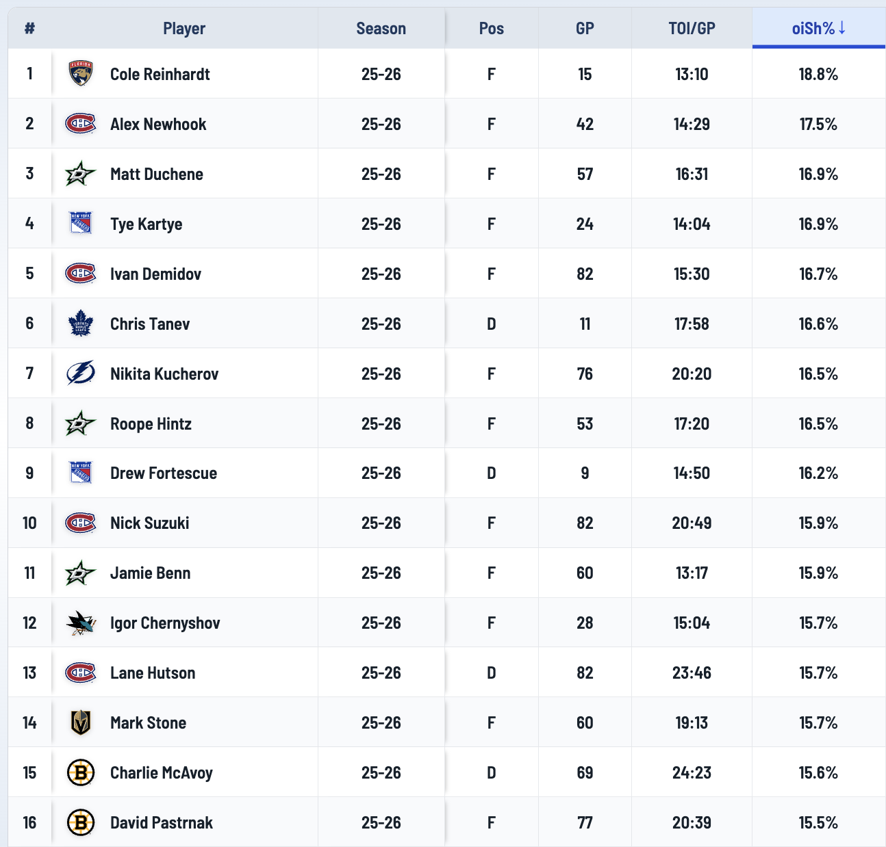
This list is full of the league’s best players. Nikita Kucherov has led the league in scoring three times in his career. Nick Suzuki and Lane Hutson are among the league's top centers and defensemen, respectively. Stone, McAvoy, and Pastrnak are all superstars as well. Elite players elevate their teammates, resulting in a higher shooting percentage for everybody on the ice. The following chart shows 2024 OiSH% on the x-axis and 2025 on the y-axis.
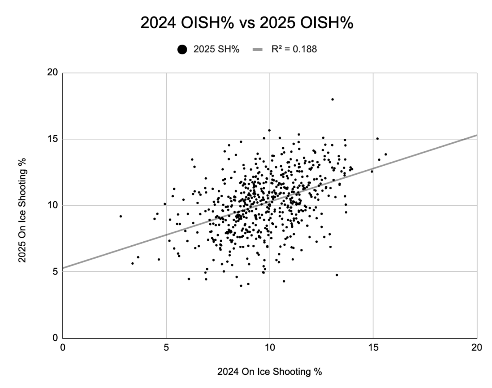
If a player has a higher shooting percentage one year, they are more likely to have a high one next season than for it to come down. This is once again because more skilled players score more goals. Simply having a high or low percentage doesn’t mean you’re on the ice for unsustainable results. A better measure to try to find unsustainable results would be to compare a player’s current season to what we should be expecting from them.
Someone shooting 10% better than their career average is very likely to see a regression back to their career average eventually. Likewise, a player shooting significantly lower than usual is likely to bounce back in a larger sample size.
The following chart looks at 2024 OiSH% but now compares it to each player’s percentage over the last three years. This historic rate is what we can expect from a player and thus gives more context in understanding a player’s percentage in 2024.
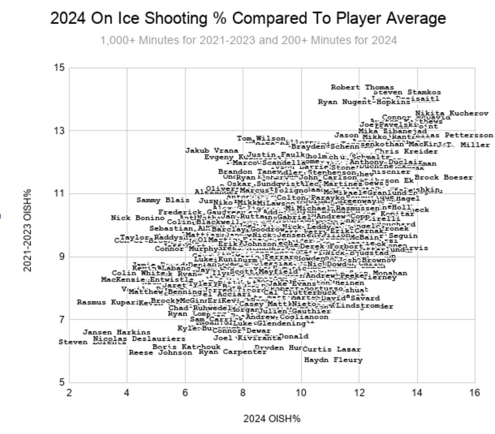
Players in the top right are good historically and kept that up in 2024. Those in the bottom left were bad historically and didn’t change for the 2024 season. Where unsustainable results can be found are along the edges. The reason for using 2024 data is to see how players we’ve deemed unsustainable produced the following season, when it would have been expected that they returned to their career rate.
Here is a chart that compares how unsustainable a player’s 2024 results were to how much they changed in the 2025 season. The x-axis represents the difference between 2024 and the previous three seasons, where a high value is unsustainable good, and a low value is unsustainable bad. The y-axis represents the player’s change from 2024 to 2025, where a high value means an increase in OiSH% for 2025.
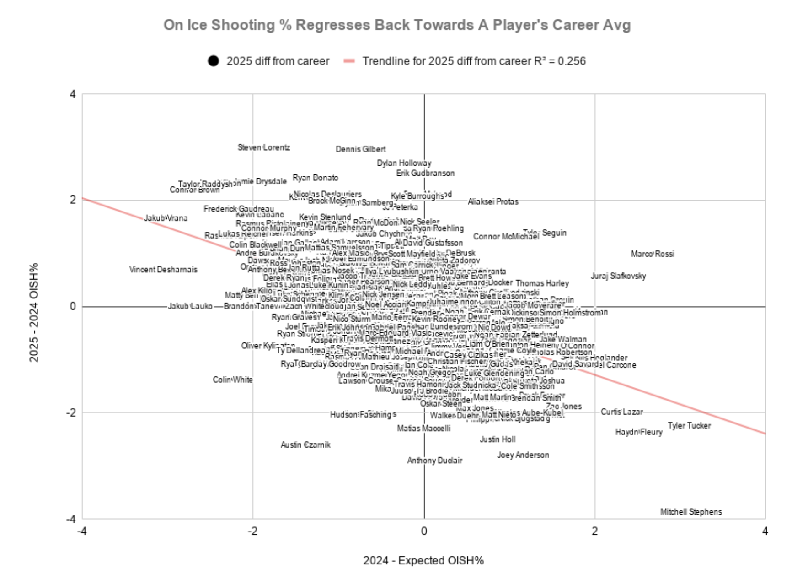
Most players are centered in the middle, but those with extreme x values all seemed to regress back to their career rates the following year. Vincent Desharnais, Jakub Vrana, Connor Brown, and Taylor Raddysh are some who had unsustainably bad 2024 seasons but bounced back in 2025. On the other hand, players like Mitchell Stephens, Tyler Tucker, Hayden Fleury, Curtis Lazar, and David Savard had above career average 2024s only to see more normal results the following year.
All of this leads to one question: Who’s producing unsustainably this season, and how can that knowledge be taken advantage of?
All that needs to be done here is compare each player’s 2026 OISH% to their percentage from the previous three seasons. To do this, I am using z-scores to normalize production across the recent, dramatic surge in league-wide scoring. I am only including players who played more than 200 minutes this season and 600 combined minutes over the past three seasons to only include established NHLers over the past four years. The following list identifies the twenty players with the largest increases and the twenty with the largest decreases.
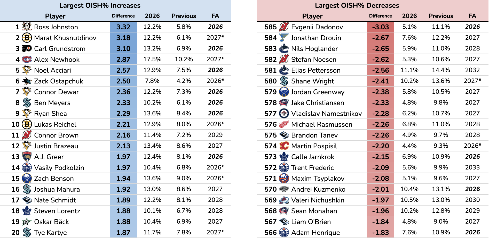
Ross Johnston leads the list of OISH% gainers after scoring the same amount of points this season that he recorded in the past three and a half seasons combined. His OiSH% was slightly above average this season, rising from one of the worst over the past three seasons. As a free agent this summer, he has an opportunity to sign a contract worth significantly more than what he would have been able to get in years past if a team believes he’ll continue producing at this season’s level.
Following closely behind Johnston is Marat Khusnutdinov, whose statistical profile exhibits an even more aggressive deviation from his career baseline. While 33 points in 77 games may not immediately stand out in a league-wide context, it represents a staggering 244% increase in point pace compared to his previous 91 NHL games (where he recorded just 16 points). This surge is a textbook example of how a spike in OiSH% can create the illusion of a massive breakout, masking production that is heavily dependent on temporary teammate finishing luck.
Alex Newhook recorded the 2nd-highest OiSH% in the league this season and finished 4th in the gainers list. Newhook’s production this season has been characterized by a “right place at the right time” efficiency. While the 'eye test' suggests a player who is consistently finding soft ice and exhibiting elite positional awareness, the underlying data raises questions about long-term sustainability. Newhook finished the season with 25 points in 42 games after missing a significant amount of time due to injury. For reference, last season he scored 26 points in 82 games, a very similar point total in nearly double the games.
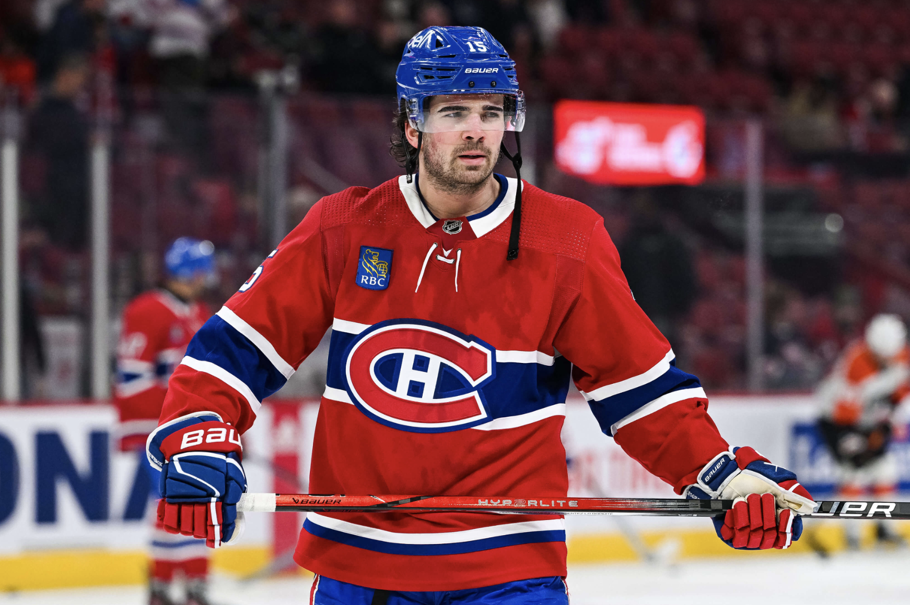
Alex Newhook, Montreal Canadiens
Of the OISH decliners, Evgenii Dadonov has the largest OISH% decrease this season. After a 40-point campaign last season, Dadonov has only scored one goal and recorded no assists in 24 games this season. While his advanced age of 37 suggests a natural physical decline, the magnitude of this drop-off indicates that his production has effectively 'bottomed out' due to extreme negative variance. He remains a textbook candidate for a bounce-back next season if he decides to postpone his retirement and play one more year.
Vancouver’s Elias Pettersson has also seen a severe regression. The 27-year-old scored 102 points in 2023 and 89 points in 2024. For the past two seasons, however, he’s put up identical 15-goal-30-assist campaigns. Things are not going his way recently, but with how amazing he played just two seasons ago, he represents one of the league’s most compelling 'buy-low' opportunities; a return to form is not merely a hope, but a statistical probability once his team-level conversion rate stabilizes, regardless of the jersey he is wearing. The only thing keeping other teams away is his $11.6m AAV. If he doesn't bounce back, it will remain one of the worst contracts in the league and something no team willingly wants to put on their books.
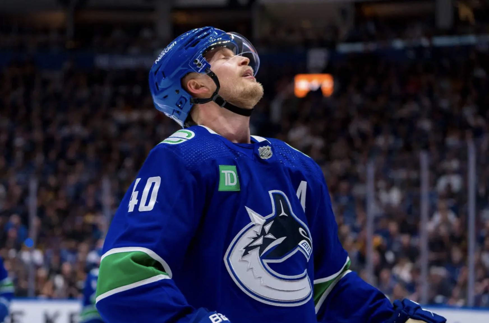
Elias Pettersson, Vancouver Canucks
Out of the top forty names on the OISH% decrease list, seven are unrestricted free agents this coming summer. These players are likely to see some kind of statistical jump next year, on the fact alone that what they’re doing this year is severely below what they’ve done in the past.
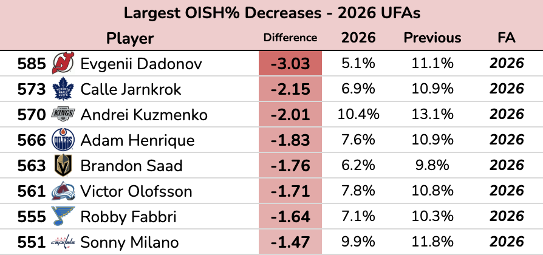
These players would be cheap to sign and could give a team that signs them significant upside. For a front office with holes in its lineup to fill this offseason, these seven players present an opportunity to pay for “floor” performance while reaping the rewards of an inevitable “ceiling” correction.
This strategy has already proven itself successful this season with the Pittsburgh Penguins and Elmer Söderblom. At this year’s trade deadline, the Penguins acquired Söderblom, a 6’8” 24-year-old forward, from the Detroit Red Wings for only a 3rd round pick. The Wings were willing to part with the promising 'unicorn' stature forward, largely because they believed he still held trade value despite being an offensive black hole all season with only 3 points in 39 games.
Pittsburgh, on the other hand, saw through his production. Behind the lagging point totals, Söderblom’s 4.9% OiSH% before the trade sat in stark contrast to his 10.8% average over the last three years, right in line with the league average. This drop is equivalent to a z-score difference of -2.73 that would rank him 2nd worst on the end of season list. Pittsburgh was more than willing to bet on a statistical jump with their plethora of assets in the next three drafts.
The mastermind behind this maneuver is Penguins General Manager Kyle Dubas, widely regarded as one of the NHL's most analytical executives. Since taking the helm, Dubas has reshaped Pittsburgh into a data-first organization, a strategy that is largely responsible for their surprising rise from 'bottom-five' expectations in the preseason up to a playoff team. The Söderblom acquisition serves as the perfect case study for this approach: after arriving in Pittsburgh, the forward’s production exploded, as he tallied 10 points in just 20 games. This surge was underpinned by a 15.2% OiSH%, a massive leap from his pre-deadline struggles that proved Dubas was right to bet on a statistical correction.
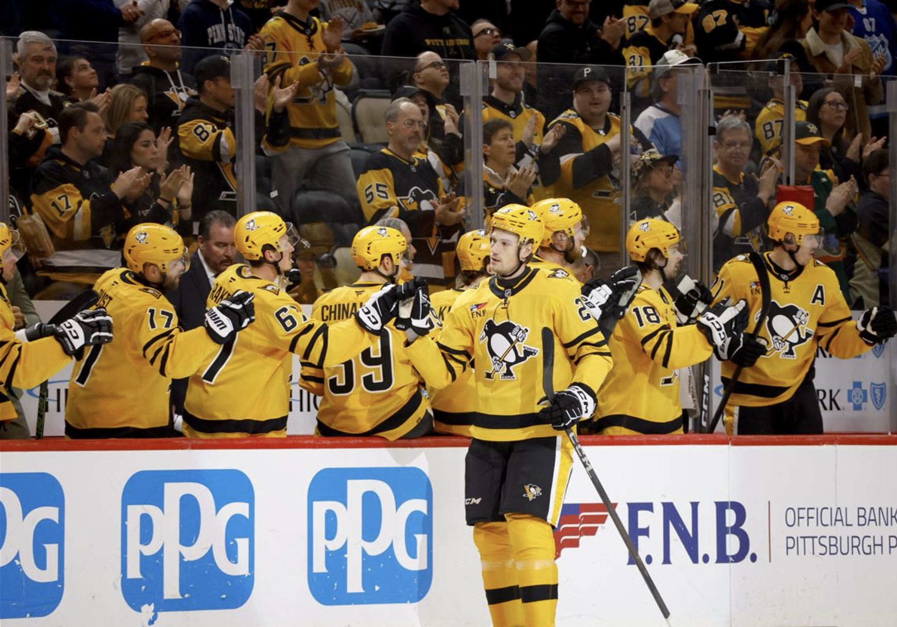
Elmer Söderblom, Pittsburgh Penguins
OiSH% can be used to find overvalued players, not just undervalued ones. These are the players that a General Manager is likely to pay more than they will be worth next season, since these unrestricted free agents are likely to regress to their three-year average next season.
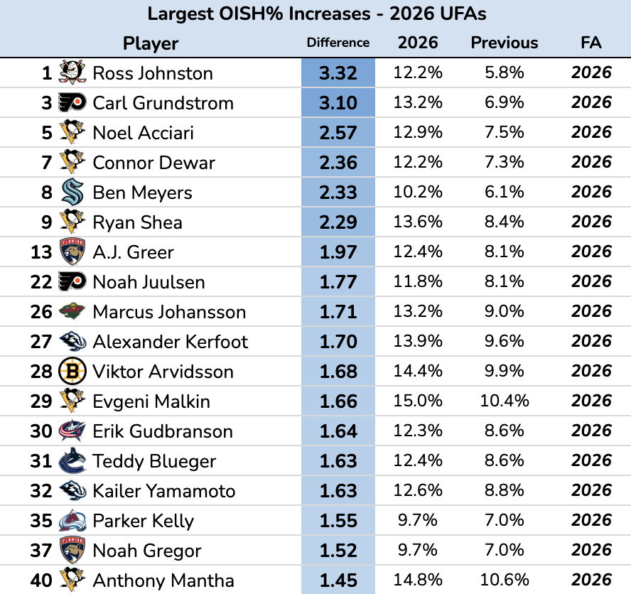
Many of these players are great, notably Evgeni Malkin, who is a franchise legend in Pittsburgh. They will still be good players wherever they go, but if someone pays Malkin expecting 15% of the shots he’s on the ice for to go in, they will be disappointed and lose valuable cap space that could be used to improve the team in better ways elsewhere.
This is what team building is all about: making many small, but positive decisions that compound into building a sustainable Stanley Cup contender. A large part of that is extracting as much value as possible from the money available to spend. A team that spends money on players poised for statistical increases will be far better off than one that spends its money on players poised for regressions. Ultimately, accounting for on-ice shooting percentage allows teams to separate sustainable talent from temporary hot streaks, leading to more informed roster construction.